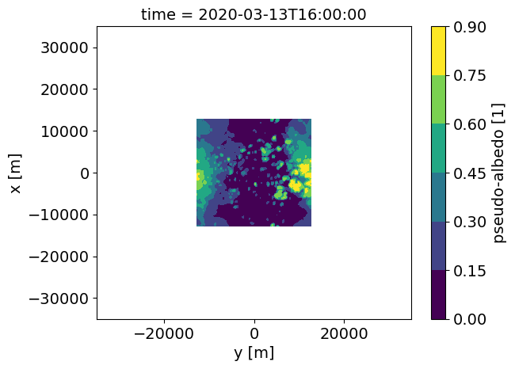
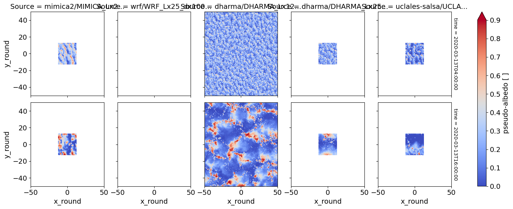
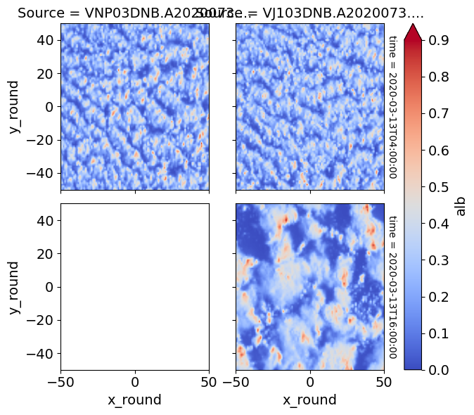
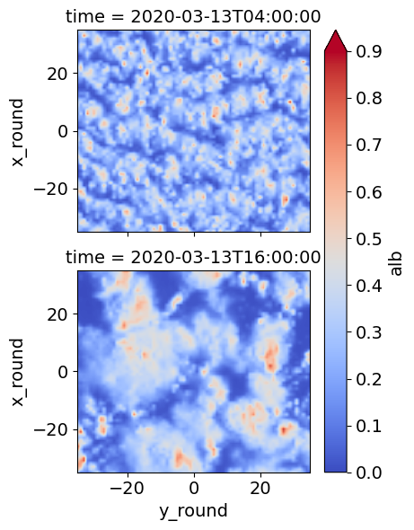

2D plotting of LES output vs. satellite imagery (work in progress)#
Updated as of 6/24/25#
The below notebook compares selected simulations against observational targets that were collected from satellite and ground-based retrievals.
Figure 6 is generated from this notebook
In case of questions or concerns, please notify Ann Fridlind (ann.fridlind@nasa.gov), Timothy Juliano (tjuliano@ucar.edu), and Florian Tornow (ft2544@columbia.edu).
import glob, os
import geopy
import geopy.distance
os.getcwd()
'/user-data-home/comble-mip/notebooks/plotting/paper'
os.chdir("/user-data-home/comble-mip/notebooks/plotting/")
%run functions_plotting.py
%run function_plotting_2d.py
## read trajectory
ds = nc.Dataset('../../data_files/theta_temp_rh_sh_uvw_sst_along_trajectory_era5ml_28h_end_2020-03-13-18.nc')
les_time = 18. + ds['Time'][:]
## select simulations to plot
sim_keyword = 'FixN_2D'
test_dharma = xr.open_dataset('/data/project/comble-mip/output_les/dharma/DHARMA_Lx25_dx100_FixN_2D.nc')
test_dharma['alb'].sel(time='2020-03-13T16:00:00.00').plot.contourf(xlim=(-35000,35000),ylim=(-35000,35000))
<matplotlib.contour.QuadContourSet at 0x7f4f5c5cefb0>

## select times
#Time_Vec = [0.,1.,2.,6.,10.,14.,18.] ## hours, where 18 h marks arrival
Time_Vec = [4.,16.] ## hours, where 18 h marks arrival
## select acceptable window of time
Time_Window = 15.0 ## hours
## set domain to be extracted
Spat_Window = 100.0 ## km
## downscale to 1 km resolution (default: True)
upscale = True
## repeat small domain output to match large domain (default: False)
tiling = False
## convert to regular time
tprop = []
for toi in Time_Vec:
tprop.append(np.datetime64('2020-03-13T00:00:00') + np.timedelta64(int(toi),'h'))
os.chdir("/user-data-home/comble-mip/notebooks/plotting/")
%run functions_plotting.py
var_vec_2d = ['alb','opt']
## load all simulations located in subfolders of the given directory
if upscale:
df_col_2d = load_sims_2d('/data/project/comble-mip/output_les/',var_vec_2d,t_shift=-2,keyword=sim_keyword,times=[t for t in Time_Vec if t > 0],coarsen=False)
df_col_2d['x'] = np.round(df_col_2d['x']/1000,1)
df_col_2d['y'] = np.round(df_col_2d['y']/1000,1)
df_col_2d = df_col_2d.rename({'y':'y_round','x':'x_round'})
else:
df_col_2d = load_sims_2d('/data/project/comble-mip/output_les/',var_vec_2d,t_shift=-2,keyword=sim_keyword,times=[t for t in Time_Vec if t > 0],coarsen=True)
Loading variables: f(time,x,y)
/data/project/comble-mip/output_les/mimica2/MIMICA_Lx25_dx100_FixN_2D.nc
...renaming variables
...adjusting x and y values
/data/project/comble-mip/output_les/wrf/WRF_Lx25_dx100_FixN_2D.nc
NaN values in alb
NaN values in opt
/data/project/comble-mip/output_les/dharma/DHARMA_Lx125_dx100_FixN_2D.nc
/data/project/comble-mip/output_les/dharma/DHARMA_Lx25_dx100_FixN_2D.nc
/data/project/comble-mip/output_les/uclales-salsa/UCLALES-SALSA_Lx25_dx100_FixN_2D.nc
...adjusting x and y values
df_col_2d['alb'].plot(row='time',col='Source',xlim=(-50,50),ylim=(-50,50),vmin=0.0,vmax=0.9,cmap='coolwarm')
<xarray.plot.facetgrid.FacetGrid at 0x7f4f5c33e680>

## load satellite imagery
os.chdir("/data/project/comble-mip/satellite_imagery/viirs/")
counter_dat = 0
for file in glob.glob("*03DNB*.nc"):
## load geolocation
ds_geo = nc.Dataset("/data/project/comble-mip/satellite_imagery/viirs/" + file)
## load imagery
file_sp = file.split('.')
file_img = glob.glob(file_sp[0].replace('3','2')+'.'+file_sp[1]+'.'+file_sp[2]+'*')[0]
ds_img = nc.Dataset("/data/project/comble-mip/satellite_imagery/viirs/" + file_img)
## time
file_time = np.datetime64('2020-01-01') + np.timedelta64(int(file_sp[1][5:8])-1,'D') + np.timedelta64(int(file_sp[2][0:2]),'h')+ np.timedelta64(int(file_sp[2][2:4]),'m')
print(file)
print(file_img)
## for each requested model timestep, check if image covers right place at right time
counter_time = 0
for Time_OI in tprop:
diff_time = (file_time - np.datetime64(Time_OI))/np.timedelta64(1, 's')/3600
if np.abs(diff_time) <= Time_Window:
print(Time_OI)
Traj_time = (Time_OI - np.datetime64('2020-03-13T18:00:00'))/np.timedelta64(1, 's')/3600
Lat_OI = ds['Latitude'][ds['Time'][:]==Traj_time][0]
Lon_OI = ds['Longitude'][ds['Time'][:]==Traj_time][0]
## create spatial window around coordinate of interest
start = geopy.Point(Lat_OI, Lon_OI)
d = geopy.distance.distance(kilometers=1.3*Spat_Window/2)
LAT_MIN = d.destination(point=start, bearing=180)[0]
LAT_MAX = d.destination(point=start, bearing=0)[0]
LON_MIN = d.destination(point=start, bearing=270)[1]
LON_MAX = d.destination(point=start, bearing=90)[1]
## select pixels within window
pix_num = ((ds_geo['geolocation_data/latitude'][:] > LAT_MIN) &
(ds_geo['geolocation_data/latitude'][:] < LAT_MAX) &
(ds_geo['geolocation_data/longitude'][:] > LON_MIN)&
(ds_geo['geolocation_data/longitude'][:] < LON_MAX)).sum()
print(pix_num)
if pix_num > 0:
ds_sub = ds_img['observation_data/DNB_observations'][:,:][(ds_geo['geolocation_data/latitude'][:] > LAT_MIN) &
(ds_geo['geolocation_data/latitude'][:] < LAT_MAX) &
(ds_geo['geolocation_data/longitude'][:] > LON_MIN)&
(ds_geo['geolocation_data/longitude'][:] < LON_MAX)]
ds_lat = ds_geo['geolocation_data/latitude'][:,:][(ds_geo['geolocation_data/latitude'][:] > LAT_MIN) &
(ds_geo['geolocation_data/latitude'][:] < LAT_MAX) &
(ds_geo['geolocation_data/longitude'][:] > LON_MIN)&
(ds_geo['geolocation_data/longitude'][:] < LON_MAX)]
ds_lon = ds_geo['geolocation_data/longitude'][:,:][(ds_geo['geolocation_data/latitude'][:] > LAT_MIN) &
(ds_geo['geolocation_data/latitude'][:] < LAT_MAX) &
(ds_geo['geolocation_data/longitude'][:] > LON_MIN)&
(ds_geo['geolocation_data/longitude'][:] < LON_MAX)]
da = xr.DataArray(
name = 'alb',
data = ds_sub,
dims = ['pixel'],
coords = dict(
lon = (['pixel'],ds_lon),
lat = (['pixel'],ds_lat)
))
## compute meridional and latitudal distance to center
da['x_dist'] = 0*da['lat']
da['y_dist'] = 0*da['lat']
for ii in range(len(ds_sub)):
da['y_dist'][ii] = geopy.distance.geodesic((da['lat'][ii],da['lon'][ii]),
(da['lat'][ii],Lon_OI)).km * np.sign((da['lon'][ii].data - Lon_OI))
da['x_dist'][ii] = -1.*geopy.distance.geodesic((da['lat'][ii],da['lon'][ii]),
(Lat_OI,da['lon'][ii])).km * np.sign((da['lat'][ii].data - Lat_OI))
## limit to requested size
da = da[np.abs(da['x_dist']) <= Spat_Window*1.05/2]
da = da[np.abs(da['y_dist']) <= Spat_Window*1.05/2]
## normalize radiance values to resemble LES pseudo-albedo
## (using quantiles to avoid dominance of few bright pixels)
fact = 0.9
if Time_OI in df_col_2d['time']:
fact = df_col_2d['alb'].sel(time=Time_OI).quantile(q=0.8).data
da.data = ((da.data - da.data.min())/(da.quantile(q=0.8).data - da.data.min()))*fact
da['x_round'] = np.round(da['x_dist'])
da['y_round'] = np.round(da['y_dist'])
for yy in np.unique(da['y_round']):
da_sub = da[da['y_round'] == yy]
da_stat = da_sub.groupby('x_round').mean()
da_stat['y_round'] = np.float64(yy)
if yy == np.unique(da['y_round'])[0]:
da_stat_stack = xr.concat([da_stat],dim='y_round')
else:
da_stat_stack = xr.concat([da_stat_stack,da_stat],dim='y_round')
if upscale:
x_round_new = np.round(np.linspace(da_stat_stack.x_round[0], da_stat_stack.x_round[-1], 10*len(da_stat_stack['x_round'])-9),1) # da_stat_stack["x_round"] * 4)
y_round_new = np.round(np.linspace(da_stat_stack.y_round[0], da_stat_stack.y_round[-1], 10*len(da_stat_stack['y_round'])-9),1) # da_stat_stack["x_round"] * 4)
da_stat_stack = da_stat_stack.interp(x_round=x_round_new,y_round=y_round_new)
da_stat_stack['time'] = Time_OI
da_stat_stack['time_diff'] = diff_time
if counter_time == 0:
da_stat_stst = xr.concat([da_stat_stack],dim='time')
else:
da_stat_stst = xr.concat([da_stat_stst,da_stat_stack],dim='time')
counter_time += 1
da_stat_stst['Source'] = file_sp[0]+'.'+file_sp[1]+'.'+file_sp[2]
if counter_dat == 0:
da_stat_ststst = xr.concat([da_stat_stst],dim='Source')
else:
da_stat_ststst = xr.concat([da_stat_ststst,da_stat_stst],dim='Source')
counter_dat += 1
VNP03DNB.A2020073.1306.002.2021125004801.nc
VNP02DNB.A2020073.1306.002.2021126174604.nc
2020-03-13T04:00:00
30058
2020-03-13T16:00:00
0
VJ103DNB.A2020073.1212.002.2020073175644.nc
VJ102DNB.A2020073.1212.002.2020073182754.nc
2020-03-13T04:00:00
30642
2020-03-13T16:00:00
30922
da_stat_ststst.plot(row='time',col='Source',xlim=(-50,50),ylim=(-50,50),vmin=0.0,vmax=0.9,cmap='coolwarm')
<xarray.plot.facetgrid.FacetGrid at 0x7f4f5beda5f0>

da_stat_ststst_slice = da_stat_ststst.copy(deep=True)
da_stat_ststst_slice = da_stat_ststst_slice.where(da_stat_ststst_slice.Source!=da_stat_ststst_slice.Source[0], drop=True)
da_stat_ststst_slice = da_stat_ststst_slice.rename({'x_round':'y_round','y_round':'x_round'})
#da_stat_ststst_slice = da_stat_ststst_slice.transpose('Source', 'time', 'x_round', 'y_round')
#da_stat_ststst_slice = da_stat_ststst_slice.swap_dims({'y_round': 'x_round'})
#da_stat_ststst_slice = da_stat_ststst_slice.roll(y_round=-1, roll_coords=False).transpose()
#da_stat_ststst_slice = da_stat_ststst_slice[["Source", "time", "x_round", "y_round", "alb"]]
da_stat_ststst_slice[0,:,:,:].plot(aspect=1.1,row='time',xlim=(-35,35),ylim=(-35,35),vmin=0.0,vmax=0.9,cmap='coolwarm')
da_stat_ststst_slice
<xarray.DataArray 'alb' (Source: 1, time: 2, x_round: 1041, y_round: 1041)> Size: 17MB
array([[[[0.10150097, 0.10498993, 0.1084789 , ..., 0.28235452,
0.29694355, 0.31153259],
[0.09816613, 0.10371139, 0.10925665, ..., 0.28620565,
0.29994044, 0.31367522],
[0.09483129, 0.10243284, 0.1100344 , ..., 0.29005679,
0.30293732, 0.31581785],
...,
[0.18136564, 0.19167572, 0.2019858 , ..., 0.38686358,
0.38484732, 0.38283107],
[0.179898 , 0.19181427, 0.20373055, ..., 0.36855833,
0.36288289, 0.35720745],
[0.17843036, 0.19195283, 0.2054753 , ..., 0.35025309,
0.34091846, 0.33158383]],
[[0.24628192, 0.24585925, 0.24543658, ..., 0.45218301,
0.4452558 , 0.43832859],
[0.24671751, 0.24613309, 0.24554867, ..., 0.45549022,
0.44829735, 0.44110449],
[0.2471531 , 0.24640693, 0.24566076, ..., 0.45879743,
0.45133891, 0.44388038],
...,
[0.03095392, 0.03681075, 0.04266758, ..., 0.00756521,
0.0071792 , 0.00679319],
[0.02746541, 0.03326085, 0.03905628, ..., 0.007713 ,
0.0073283 , 0.0069436 ],
[0.0239769 , 0.02971095, 0.03544499, ..., 0.00786079,
0.0074774 , 0.00709401]]]])
Coordinates:
* y_round (y_round) float64 8kB -52.0 -51.9 -51.8 -51.7 ... 51.8 51.9 52.0
* x_round (x_round) float64 8kB -52.0 -51.9 -51.8 -51.7 ... 51.8 51.9 52.0
* time (time) datetime64[ns] 16B 2020-03-13T04:00:00 2020-03-13T16:00:00
* Source (Source) <U22 88B 'VJ103DNB.A2020073.1212'
time_diff (Source, time) float64 16B 8.2 -3.8
#plt.rcParams['font.size'] = 14 # Set global font size
plt.rcParams['axes.titlesize'] = 14 # Set title font size
plt.rcParams['axes.labelsize'] = 14 # Set axis label font size
plt.rcParams['xtick.labelsize'] = 14 # Set x-tick label font size
plt.rcParams['ytick.labelsize'] = 14 # Set y-tick label font size
Drop WRF, we don’t have the pseudo-albedo outputs#
import copy
df_col_2d_slice = copy.deepcopy(df_col_2d)
df_col_2d_slice = df_col_2d_slice.drop_sel(Source='wrf/WRF_Lx25_dx100_FixN_2D.nc')
df_col_2d_slice
<xarray.Dataset> Size: 1GB
Dimensions: (x_round: 1280, y_round: 1280, time: 2, Source: 4)
Coordinates:
* x_round (x_round) float64 10kB -64.0 -63.9 -63.8 ... 63.7 63.8 63.9
* y_round (y_round) float64 10kB -64.0 -63.9 -63.8 ... 63.7 63.8 63.9
* time (time) datetime64[ns] 16B 2020-03-13T04:00:00 2020-03-13T16:0...
* Source (Source) <U49 784B 'mimica2/MIMICA_Lx25_dx100_FixN_2D.nc' ......
Data variables: (12/13)
ustar (Source, time, y_round, x_round) float64 105MB nan nan ... nan
hfss (Source, time, y_round, x_round) float64 105MB nan nan ... nan
hfls (Source, time, y_round, x_round) float64 105MB nan nan ... nan
lwp (Source, time, y_round, x_round) float64 105MB nan nan ... nan
iwp (Source, time, y_round, x_round) float64 105MB nan nan ... nan
pr (Source, time, y_round, x_round) float64 105MB nan nan ... nan
... ...
alb (Source, time, y_round, x_round) float64 105MB nan nan ... nan
olr11 (Source, time, y_round, x_round) float64 105MB nan nan ... nan
us (Source, time, y_round, x_round) float64 105MB nan nan ... nan
vs (Source, time, y_round, x_round) float64 105MB nan nan ... nan
x_round_ph (Source, x_round) float64 41kB nan nan nan nan ... nan nan nan
y_round_ph (Source, x_round, y_round) float64 52MB nan nan nan ... nan nan
Attributes:
title: Mean output for MIMICA_Lx25_dx100_FixN_2D_alt
reference: COMBLE
author: Alejandro Baro Perez (alejandro.baro.perez@misu.su.se)
version: Created on 2026-05-27
format_version: DEPHY SCM format version 1Create Fig. 6#
os.chdir("/user-data-home/comble-mip/notebooks/plotting/paper/")
#ds_merge.plot(row='time',col='Source',vmin=16,vmax=24,xlim=(-35,35),ylim=(-35,35),cmap='coolwarm')
cf1 = xr.merge([df_col_2d_slice['alb'],da_stat_ststst_slice.drop('time_diff')])['alb'].plot(x='x_round',aspect=1.1,row='time',col='Source',xlim=(-50,50),ylim=(-50,50),vmin=0.0,vmax=0.9,cmap='coolwarm')
#cf1 = xr.merge([df_col_2d_slice['alb']])['alb'].plot(aspect=1.1,row='time',col='Source',xlim=(-50,50),ylim=(-50,50),vmin=0.0,vmax=0.9,cmap='coolwarm')
titles = ['VIIRS','DHARMA Production Domain','DHARMA Test Domain','MIMICA Test Domain','UCLALES-SALSA Test Domain']
for ax, title in zip(cf1.axes.flat, titles):
ax.set_title(title)
#ax.set_xlabel('Distance [km]')
for i in np.arange(len(Time_Vec)):
cf1.axs[i,0].set_ylabel('Distance [km]')
for i in np.arange(4):
cf1.axs[-1,i].set_xlabel('Distance [km]')
cf1.cbar.set_label(label='Pseudo-Albedo [-]', size=14)
#plt.gca().invert_xaxis()
#plt.gca().invert_yaxis()
for ax in cf1.axs.flat:
ax.invert_xaxis()
ax.invert_yaxis()
#for i in np.arange(len(Time_Vec)):
# for j in np.arange(4):
# cf1.axs[i,j+1].invert_xaxis()
# cf1.axs[i,j+1].invert_yaxis()
#print (cf1.title[0,0])
#cf1.axs[0,0].invert_xaxis()
#cf1.axs[0,0].invert_yaxis()
plt.savefig('viirs_les_panel_R1.png',dpi=600,bbox_inches='tight')
plt.close()
#plt.show()
/tmp/ipykernel_1498/2320828374.py:3: DeprecationWarning: dropping variables using `drop` is deprecated; use drop_vars.
cf1 = xr.merge([df_col_2d_slice['alb'],da_stat_ststst_slice.drop('time_diff')])['alb'].plot(x='x_round',aspect=1.1,row='time',col='Source',xlim=(-50,50),ylim=(-50,50),vmin=0.0,vmax=0.9,cmap='coolwarm')
/tmp/ipykernel_1498/2320828374.py:6: DeprecationWarning: self.axes is deprecated since 2022.11 in order to align with matplotlibs plt.subplots, use self.axs instead.
for ax, title in zip(cf1.axes.flat, titles):